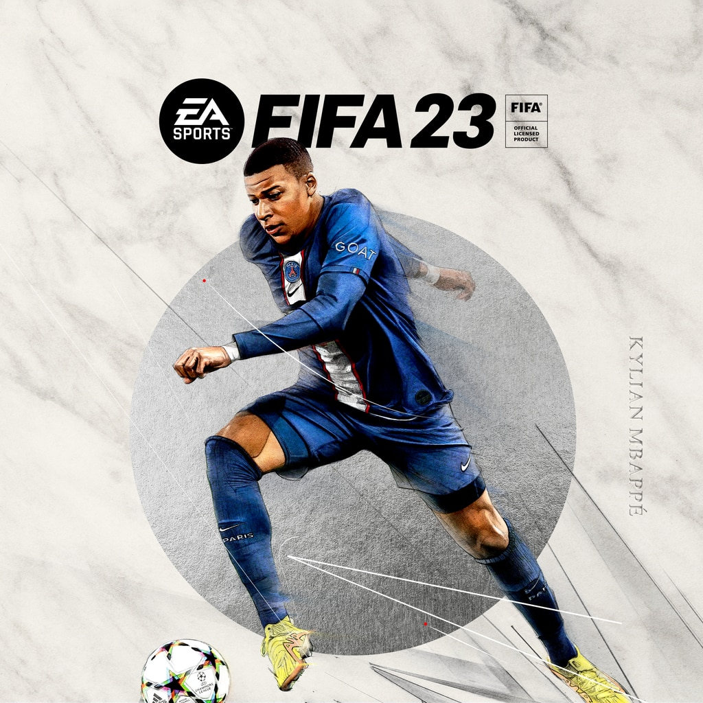

Los Juegos de PS5 mas jugados
Fifa 23

FIFA 23 es un simulador de fútbol de EA Sports, el último bajo esta denominación, que busca
ofrecer al usuario el mejor videojuego de fútbol de la historia con más características,
modos de juego, contenido del Mundial, clubes, ligas, competiciones y jugadores. Desde la
firma norteamericana apuestan por llevar el juego del mundo al campo, con la tecnología
HyperMotion2 que ofrece una experiencia de juego aún más realista, tanto la Copa del Mundo
masculina como la femenina, que llegarán al juego más adelante en forma de actualización, la
incorporación de equipos femeninos, funciones de juego cruzado, y mucho más.
FIFA 23 garantiza a sus jugadores disfrutar de una autenticidad única con más de 19.000
jugadores, más de 700 equipos, 100 estadios y más de 30 ligas, así como un curioso crossover
con Ted Lasso. Las principales mejoras del videojuego están en el modo Carrera, que ha
sumado numerosas novedades para permitir llevar a tu crack a lo más alto del fútbol mundial.
¿Prefieres hacerlo desde el punto de vista del entrenador? No dudes en convertirte en
Ancelotti y dirigir a tu equipo a por otra Champions League. Más allá de lo meramente
futbolístico, FIFA también te invita a seguir la vida de tu protagonista gestionando sus
relaciones con sus compañeros, negocios y otros campos lejos del fútbol.
Volta y Clubes Pro también regresan, ofreciendo la primera una experiencia más desenfadada
del fútbol callejero y el segundo la posibilidad de jugar junto a otros 21 futbolistas un
partido virtual. ¿Podrás llevar a lo más alto a tu equipo? ¡No te muevas de tu posición!
FIFA 23 es una producción muy completa en la que cualquier fan del fútbol puede encontrar su
lugar.
God Of War

God of War: Ragnarok es la secuela del aclamado God of War (2018) y presenta un videojuego de
acción y aventura de gran factura donde Kratos y Atreus deben viajar a cada uno de los Nueve
Reinos en busca de respuestas mientras las fuerzas asgardianas se preparan para la batalla
profetizada que supondrá el fin del mundo. Por el camino, explorarán paisajes míticos
increíbles y se enfrentarán a temibles enemigos, como monstruos y dioses nórdicos. La
amenaza del Ragnarök está cada vez más cerca: "Kratos y Atreus deben elegir entre su propia
seguridad y la de los reinos".
Equipado con sus fieles armas de guerra, como el hacha Leviatán y las Espadas del Caos,
Kratos deberá llevar al límite sus letales capacidades para proteger a su familia. Además,
tanto él como Atreus podrán aprender nuevas habilidades que les permitirán personalizar el
fluido y expresivo combate en este relato épico e implacable que garantiza sus responsables
con God of War: Ragnarok.
A cargo del proyecto vuelve a estar SIE Santa Monica Studio bajo supervisión de PlayStation
Studios. El videojuego se lanza en PS5 y PS4, sin que haya trascendido aún un posible
estreno en PC. Es de esperar que sus responsable saquen partido no solo a las bondades de
hardware de PlayStation 5, sino a algunas de las funciones del DualSense, como los gatillo
adaptables o la retroalimentación háptica, aunque de momento tales noveles novedades no han
sido detalladas. También se vende un audio 3D direccional que permite oír llegar a los
enemigos desde cualquier dirección.
The DioField Chronicle
The DioField Chronicle es la nueva producción del estudio japonés Lancarse, creadores de Lost
Dimension, Monark y Zanki Zero, en esta ocasión con la producción detrás de Square-Enix. Se
trata de un SRPG en semi tiempo real, en el que tendremos que mover a nuestras unidades en
el campo de batalla deteniendo el tiempo para hacer ajustes y utilizar las habilidades
especiales de cada una de las cuatro categorías a las que pertenecen.
La historia nos sumerge en un conflicto entre naciones que pugnan por los recursos de un
reino en el que florece el jade, el mineral necesario para la creación de artilugios y
poderes mágicos. Nuestro papel como líder de una banda de mercenarios será lidiar en este
conflicto mientras tratamos de esclarecer los sucesos de nuestro pasado. El juego se divide
en pequeñas contiendas principales y secundarias, y una base en la que realizar todas las
mejoras de los personajes. Será muy importante realizar encargos secundarios para poder
subir de nivel adecuadamente a nuestras tropas y enfrentarse a los desafíos más complejos.
Los Juegos de PC mas jugados
Fifa 23
FIFA 23 es un simulador de fútbol de EA Sports, el último bajo esta denominación, que busca
ofrecer al usuario el mejor videojuego de fútbol de la historia con más características,
modos de juego, contenido del Mundial, clubes, ligas, competiciones y jugadores. Desde la
firma norteamericana apuestan por llevar el juego del mundo al campo, con la tecnología
HyperMotion2 que ofrece una experiencia de juego aún más realista, tanto la Copa del Mundo
masculina como la femenina, que llegarán al juego más adelante en forma de actualización, la
incorporación de equipos femeninos, funciones de juego cruzado, y mucho más.
FIFA 23 garantiza a sus jugadores disfrutar de una autenticidad única con más de 19.000
jugadores, más de 700 equipos, 100 estadios y más de 30 ligas, así como un curioso crossover
con Ted Lasso. Las principales mejoras del videojuego están en el modo Carrera, que ha
sumado numerosas novedades para permitir llevar a tu crack a lo más alto del fútbol mundial.
¿Prefieres hacerlo desde el punto de vista del entrenador? No dudes en convertirte en
Ancelotti y dirigir a tu equipo a por otra Champions League. Más allá de lo meramente
futbolístico, FIFA también te invita a seguir la vida de tu protagonista gestionando sus
relaciones con sus compañeros, negocios y otros campos lejos del fútbol.
Volta y Clubes Pro también regresan, ofreciendo la primera una experiencia más desenfadada
del fútbol callejero y el segundo la posibilidad de jugar junto a otros 21 futbolistas un
partido virtual. ¿Podrás llevar a lo más alto a tu equipo? ¡No te muevas de tu posición!
FIFA 23 es una producción muy completa en la que cualquier fan del fútbol puede encontrar su
lugar.
Counter Strike

Return to Monkey Island es una aventura gráfica nacida como una continuación directa de
Secret of Monkey Island y Monkey Island 2: LeChuck's Revenge, contando entre los líderes del
proyecto nada menos que a Ron Gilbert, diseñador y creador de las dos primeras entregas de
la franquicia en LucasArts. Terrible Toybox (Thimbleweed Park) desarrolla el videojuego en
colaboración con la editorial de software independiente Devolver Digital y Lucasfilm Games.
En Return to Monkey Island han pasado muchos años desde que Guybrush Threepwood se enfrentó
por última vez en un duelo de ingenio a su némesis, el pirata zombi LeChuck. Su verdadero
amor, Elaine Marley, ya no es gobernadora y el propio Guybrush está perdido y se siente
incompleto, ya que nunca llegó a descubrir el Secreto de Monkey Island. Unos piratas jóvenes
y modernos, liderados por la capitana Madison, han expulsado a la vieja guardia, la isla
Mêlée se ha ido al traste y al empresario Stan lo han encerrado por 'delitos relacionados
con el marketing'.
Ron Gilbert, acompañado por su coguionista Dave Grossman, el director artístico Rex Crowle
(Knights & Bikes, Tearaway) y los compositores Peter McConnell, Michael Land y Clint
Bajakian (Monkey Island, Monkey Island 2: LeChuck’s Revenge), prepara una aventura gráfica
de complejos puzles, estrambóticas situaciones y devastadoras réplicas donde habrá tiempo
para charla con viejos camaradas de la franquicia y nuevos personajes, así como para
explorar nuevos nunca antes vistos.
Cyberpunk 2077

Cyberpunk 2077, que sale a la venta en diciembre de 2020 originalmente para PC, PS4, Xbox One
y Stadia, es un videojuego RPG de mundo abierto desarrollado por los creadores de la serie
The Witcher, CD Projekt Red, que se basa en un clásico juego de tablero llamado Cyberpunk
2020 y que es todo un clásico de los años 80 firmado por Mike Pondsmith. Lo que tendremos
con este título de rol es un lanzamiento oscuro, con un argumento maduro y complejo, enormes
opciones de juego y un desarrollo de la acción abierto en el que las decisiones del jugador
marcan el rumbo de la partida.
Anunciado en el año 2012, el juego cuenta con el motor gráfico REDengine 4 para ofrecer el
siempre asombroso aspecto visual del que gozan los títulos del celebrado estudio polaco.
Mantendrá, además, las bases del juego de tablero, con las mismas clases, así como el
complicado mundo futurista que se recrea: marcado por conspiraciones, tramas intrincadas
entre grandes corporaciones y la sensación constante de que, como en los juegos que vivimos
junto a Geralt de Rivia, nuestro destino lo marcamos nosotros convirténdonos en un
cyberpunk, un mercenario urbano equipado con mejoras cibernéticas que ha de hacerse un
nombre en las calles de Night City, una megapolis que cuenta con la presencia estrella del
actor Keanu Reeves —bajo el rol de Jonnhy Silverland—.
Cyberpunk 2077 hace bastante hincapié en las opciones de personalizaciones, con diferentes
implantes cibernéticos, ropas, tatuajes, etc., que los jugadores pueden ir desbloqueando
conforme avancen en la partida, incluidos también diferentes coches, motos y otros vehículos
necesarios para moverse a toda velocidad por una ciudad de enormes dimensiones, un mundo
mucho más denso y vertical que el que los jugadores tuvieron el gusto de explorar en The
Witcher 3: Wild Hunt. También armas, CD Projekt Red garantiza una aventura con un amplio
arsenal con varias capas de mejora, habilidades y elementos cyberware a dominar para acabar
con enemigos de todas las clases, desde agentes de policía y seguridad de las grandes
corporaciones a bandas y otros mercenarios.
Los Juegos de xbox mas jugados
Fornite
Desarrollado en Berlín por los chicos de Point Blank Games, el atractivo Stray Blade es una
suerte de hack and slash con un desenfadado e informal estilo visual de lo más atractivo. El
videojuego mezcla un género y acción y aventuras, con fuertes elementos RPG en el que
encarnamos a un caballero que va medrando entre criaturas monstruosas en una tierra arrasada
por una guerra civil.
Stray Blade embarca al jugador en un viaje inolvidable donde descubrir la historia de Acrea
y el porqué se convirtió en un escenario de muerte y destrucción, teniendo que explorar un
mundo constantemente alterado por sus descubrimientos y sus beligerantes fuerzas.
Por el camino esperan ruinas de ciudades tomadas por la naturaleza, cuevas congeladas y
cañones sinuosos entre otros escenarios habitados por cientos de peligros. La misión de su
protagonista no es otra que recupera tu libertad y devolver el equilibrio a este lugar
asolado por la guerra guiado por tu fiel compañero, Boji, aunque eso implique enfrentarse a
enemigos implacables y jefazos.
Elden Ring

Elden Ring es un misterioso videojuego en el que trabaja FromSoftware, padres de Dark Souls,
y George R.R. Martin, autor de la saga de libros adaptada con éxito a televisión bajo el
nombre de Juego de Tronos. Elden Ring es un juego de mundo abierto, que presumiblemente
sigue a rajatabla los mandamientos de la serie creada por Hidetaka Miyazaki, y que está
ambientado en la fantasía oscura occidental y que proponen una mirada más profunda del RPG
en tercera persona.
Como sinluz, el juego nos insta a explorar un mapa grande y variado para descubrir todos los
secretos que ocultan las Tierras Intermedias y descubrir cuál es el destino del misterioso
Círculo de Elden. A pesar de tener seis mazmorras principales, mucho más grandes y complejas
de las que hemos visto en anteriores juegos de From, el mundo abierto esconde muchísimos
secretos en forma de mazmorras opcionales, catacumbas, minas y enemigos duros en el terreno
que nos ofrecerán grandes desafíos y jugosas recompensas. Su base en combate bebe mucho de
la fórmula de Dark Souls 3, expandiendo su repertorio de movimientos y ataques, añadiendo
opciones de sigilo y una mayor personalización de nuestro personaje y clases.
The DioField Chronicle
The DioField Chronicle es la nueva producción del estudio japonés Lancarse, creadores de Lost
Dimension, Monark y Zanki Zero, en esta ocasión con la producción detrás de Square-Enix. Se
trata de un SRPG en semi tiempo real, en el que tendremos que mover a nuestras unidades en
el campo de batalla deteniendo el tiempo para hacer ajustes y utilizar las habilidades
especiales de cada una de las cuatro categorías a las que pertenecen.
La historia nos sumerge en un conflicto entre naciones que pugnan por los recursos de un
reino en el que florece el jade, el mineral necesario para la creación de artilugios y
poderes mágicos. Nuestro papel como líder de una banda de mercenarios será lidiar en este
conflicto mientras tratamos de esclarecer los sucesos de nuestro pasado. El juego se divide
en pequeñas contiendas principales y secundarias, y una base en la que realizar todas las
mejoras de los personajes. Será muy importante realizar encargos secundarios para poder
subir de nivel adecuadamente a nuestras tropas y enfrentarse a los desafíos más complejos.